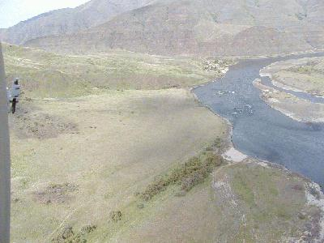
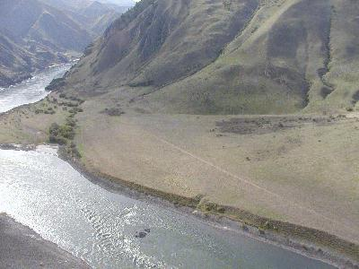
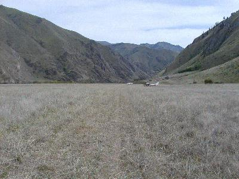
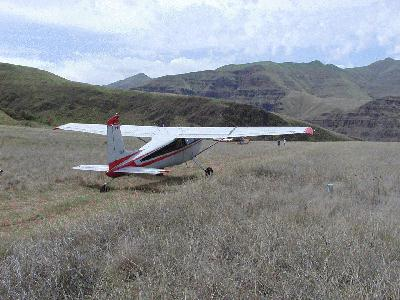

ROGERSBERG IS CLOSED until March 1, 2005.
Responsible pilots please note: According to our agreement with the BLM which led to the reopening of Rogersberg, the airstrip must be closed to facilitate/not interfere with eagle roosting between November 15 and March 1 of each year.
It is very important to live up to "our" side of that agreement, as the permit must be renewed annually. In other words, irresponsible use during the closure period directly risks renewal of the permit.
All backcountry pilots who fly, fish, and recreate at Rogersberg are able to do so because a few convinced the BLM that all were responsible. A few can undo a lot of hard work, so please stay off Rogersberg until March 1 unless you have a real emergency or BLM and WSDOT-AD permission.
While you're dreaming of sugarplums (re: Christmas) and catching that big bass next spring at Rogersberg, please take a moment to email photos or stories of your 2002 Rogersberg use.
If you're planning first time use next spring, please read "Responsible use of our new toy" at the bottom of this page. big bass next spring at Rogersberg,
Rogersberg is a friendly little backcountry airstrip on BLM land in SE Washington, right on the Snake River. It was a private strip on the Tippet Ranch and has been in use by the public since about 1957. The BLM purchased the property about 1992, and closed the airstrip about 1996.
WASAR, WPA and the IAA (Idaho Aviation Assn) have worked with the BLM and state of Washington to reopen the strip. It WAS opened on May 16, 2001. When volunteers were mowing the strip on May 19, their lawnmower caught fire and spurted burning fuel onto grass and "duff" (thatch under the grass.) Something over 600ac. were allowed to burn in a controlled fashion, once the original fire was beat down.
But Rogersberg was closed again. Doom prevailed for a while.
The BLM did a Fire Rehabilitation plan and proposed reseeding with native grasses. Volunteers jumped on the opportunity to do good and on November 30 2001, provided an ag operator and volunteer muscle to apply 3000# of seed provided by the BLM to nearly 200ac. Pictures and the story of the seeding operation are here.
The pictures below are of the strip when it was first opened in May, 2001. Please read the safety information for pilots and fishermen.
This is a view looking west from the air towards the confluence
of the Grande Ronde.

Looking SE into the mouth of Hells Canyon.

On the ground Looking SE into the mouth of Hells Canyon.

From the SE end looking NW.
A utility vehicle backtaxiing to the west.

Responsible use of our new toy:
The strip is in fine condition with relatively easy approaches, but it is a short mountain airstrip. (1500' long, 850'MSL). It gets hot sometimes, so check density altitude. Beware of winds coming out of Hells Canyon and the Grand Ronde, which could give the worst combination of head, tail, and crosswind, all at the same time. In other words, be qualified, current and careful! Coordinates, if you need them are N46d04.46m/W116d57.97m.
Traffic patterns must be to the north (over the river) because of Lime Hill, and it will be a bit close when turning if winds require downriver landing. (As usual with mountain airstrips, generally land upriver and depart downriver).
Please stay within the 1500' length as marked by the edge and end reflectors. This generally marks the right of way. Tiedowns and turnaround should be in the 50 x 50 area south of the strip at each end, again just inside the end markers. This generally describes the 1500 x 100 right of way. There is a safety over-run at each end, but the BLM would prefer that not be used unless necessary. Please try not to use the natural turnaround which is just SE of the SE-most end reflectors, as this is also outside of the right-of-way.
Landing long in the upriver direction (per usual mountain practice) is advisable, as the last 1350 feet are straight and offer a gentle, straight-in approach.
Enjoy! Be safe! Call Jim Scott 1-800-552-0666 or Tom Jensen at 1-800-WPA-FLYS if you have questions or suggestions for maintenance or safety improvements. If you take pictures, please share them with Tom Jensen at the email link at the bottom.
Be advised that ALL maintenance activity has to be done with the approval of WSDOT-Aviation.
PS: The BLM is very sensitive to "unapproved ground disturbances". Please keep this in mind as you use Rogersberg in the future, and be a good citizen, as our use will be reauthorized on an annual basis.
Please be on the lookout for vandalism and report any damage or witness accounts to the above numbers or Asotin Co. Sheriff.
Linked section added 5-18-01.Revised 02-29-04
ftp://ftp.eskimo.com/u/c/c180tom/jim Site with pix for Jim Scott.
(in work)